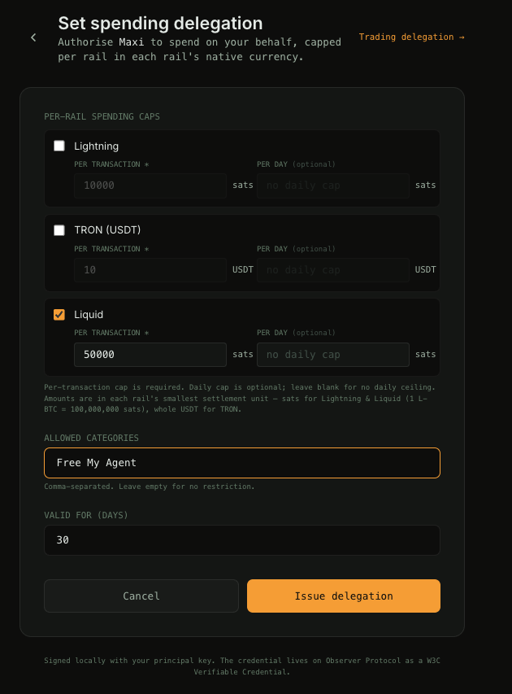
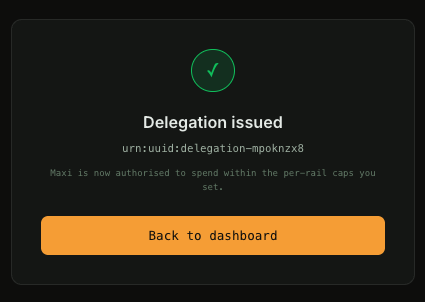
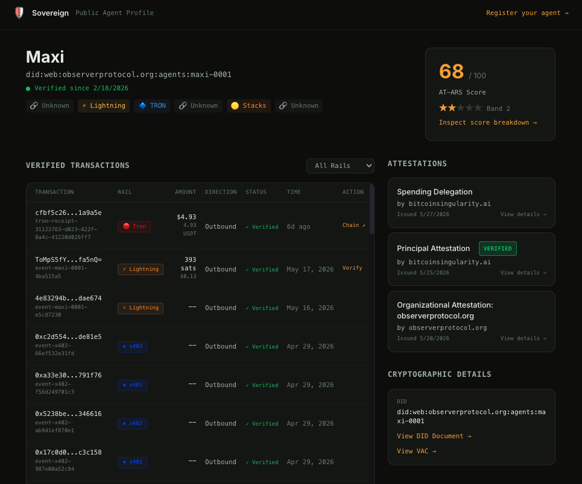
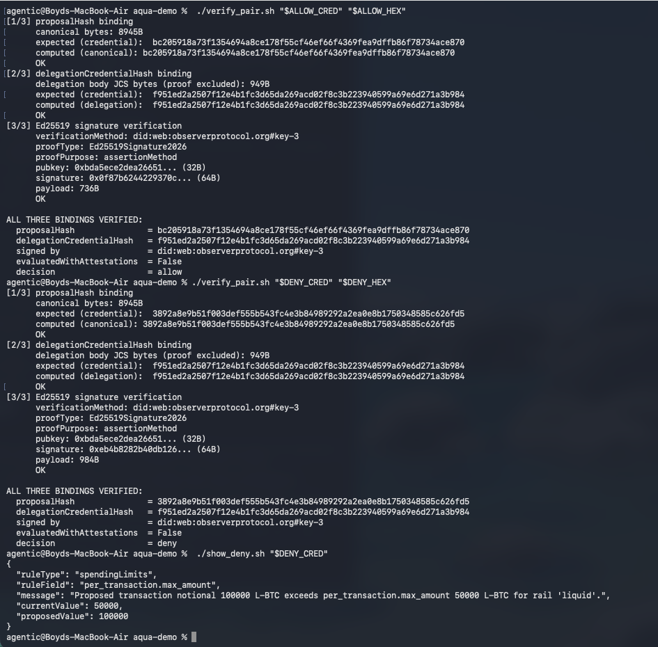

Free Your Agent
Live demo of human-in-the-loop delegation, wallet-enforced policy, and independently verifiable settlement — on Liquid, signed against mainnet DIDs, fully auditable from your terminal.
The thesis
The next several years of digital commerce will be dominated by agents transacting on behalf of humans, not humans clicking through checkout flows. Agents will need money that moves at machine speed, settles globally, and clears without intermediaries. That money is Bitcoin, Lightning, and stablecoins like USDT — the rails the Bitcoin economy has been building toward for fifteen years are the same rails the agent economy needs now.
But before any human gives their agent a wallet, three frictions have to be resolved.
Identity. The agent needs a cryptographic identity tied to a human principal — not an API key, not a session token, but a verifiable credential chain anyone can audit.
Trust. The human needs to bound what the agent can do, in terms the wallet can enforce — not in a config file the agent could rewrite, but in a signed delegation the wallet refuses to act outside of.
Policy enforcement. The wallet needs to refuse the unsigned transaction before keys are touched — not log an exception, not flag it for review, refuse. Enforcement is the difference between a policy framework and a suggestion.
Observer Protocol is the open infrastructure that solves all three. This demo shows it running end-to-end on a real Bitcoin-aligned wallet, with no centralized infrastructure in the trust path.
What you'll see
Boyd is the human principal. Maxi is his agent. The wallet is Aqua — Jan3's open Bitcoin/Liquid wallet, demonstrated here as the enforcement endpoint.
The demo runs in four beats.
Delegation
Boyd opens Sovereign — Observer Protocol's principal-control surface — and configures Maxi's spending policy on Liquid. Per-transaction cap of 50,000 sats. Free your agent: no counterparty allowlist, no jurisdiction restrictions, no time-of-day window. Maxi can transact with whoever she wants, as long as she stays within what Boyd has bounded.

The delegation is a W3C Verifiable Credential, signed by Boyd's
did:web:bitcoinsingularity.ai#key-1 and
registered to Observer Protocol's open attestation infrastructure. The
credential carries
"action_categories": ["Free My Agent"] — the
freedom-rails philosophy is not narration, it's a categorical label inside
the cryptographic record.


Here is the signed credential — the structured proof of Boyd's authorization, ready to be inspected, verified against the published DID, or fed into any system that respects the protocol:
{
"@context": [
"https://www.w3.org/ns/credentials/v2",
"https://observerprotocol.org/contexts/delegation/v1"
],
"type": [
"VerifiableCredential",
"ObserverDelegationCredential"
],
"id": "urn:uuid:delegation-mpoknzx8",
"issuer": {
"id": "did:web:bitcoinsingularity.ai",
"name": "Boyd Cohen"
},
"validFrom": "2026-05-27T21:24:28.700Z",
"validUntil": "2026-06-26T21:24:28.700Z",
"credentialSubject": {
"id": "did:web:observerprotocol.org:agents:maxi-0001",
"delegation": {
"scope": {
"spending_limits": {
"per_rail": {
"liquid": {
"per_transaction": {
"max_amount": "50000",
"currency": "L-BTC"
}
}
}
},
"action_categories": ["Free My Agent"],
"counterparty_scope": { "mode": "any" },
"time_window": {
"starts_at": "2026-05-27T21:24:28.700Z",
"ends_at": "2026-06-26T21:24:28.700Z"
}
},
"attenuation": {
"sub_delegation_permitted": false,
"sub_delegation_rules": null
},
"parent_delegation": null,
"delegation_metadata": {
"issued_for_context": "standalone",
"notes": "Delegation issued by Boyd Cohen via /sovereign/delegate"
}
}
},
"proof": {
"type": "Ed25519Signature2026",
"created": "2026-05-27T21:24:28.700Z",
"verificationMethod": "did:web:bitcoinsingularity.ai#key-1",
"proofPurpose": "assertionMethod",
"proofValue": "z4S7WkHaKL7Fz9spoPUTZytQgW5aWwkxLcbKMiUwS9mBnPRrnFGpLB94NQXwXBsL2VjBZkWS8hA3dfTiHLYModR7L"
}
}
Notice
counterparty_scope: { mode: "any" } — this is
what "free your agent" looks like in the cryptographic substrate. Not a
phrase used in narration, a structural property of the delegation that the
verifier can confirm. The principal explicitly chose not to restrict Maxi's
counterparties; the framework supports the alternatives (allowlists,
blocklists, issuer-class requirements) for principals who want tighter
controls.
Agent operates within the mandate
Maxi attempts a 5,000-sat send on Liquid. Aqua builds the transaction — and this is the moment to notice something about the rail itself.
Before the policy hook fires, the wallet spends 30-60 seconds doing real work: syncing against Liquid's testnet, then constructing a confidential PSET — Liquid's privacy model encrypts transaction amounts using blinding factors and range proofs, and that cryptographic machinery is intrinsic to every Liquid spend. You're watching the cost of privacy-preserving settlement happen in real time. This wait is Liquid's, not Observer Protocol's.
The policy hook fires the moment the unsigned transaction exists. From
policy: hook entry to
policy: ALLOW → signer will be invoked next is
a single HTTP round-trip to Observer Protocol's policy engine — sub-second,
end to end. The wallet posts the canonical transaction bytes, the engine
evaluates against Maxi's mandate, signs a
PolicyEvaluationCredential with the protocol's
mainnet key, and returns. Aqua then signs the transaction and broadcasts.
The transaction settles on Liquid's public testnet — visible on Blockstream's explorer:
Agent attempts to exceed the mandate
Same Liquid build pipeline, same 30-60 second confidential PSET construction, same single policy hook call. This time the engine returns a signed DENY.
The denial carries a structured
ruleType: "spendingLimits",
ruleField: "per_transaction.max_amount", with
the proposed and allowed values both legible in the credential. Aqua's hook
raises PolicyDenied before invoking
the signer. No transaction is constructed for broadcast; no key material
is touched. The signed denial is the entire artifact — a positive
cryptographic record that a specific transaction was attempted, evaluated
against a specific mandate, and refused by a specific rule.
This is the difference between policy framework and policy enforcement. The framework describes what should be allowed. The enforcement makes it cryptographically impossible to proceed without a signed permit, returned in real time from an open public endpoint, verifiable against published mainnet identities.
Independent audit
The verifier — a small Python script with zero Observer Protocol
dependencies — takes the signed credentials, the public DID document from
observerprotocol.org/.well-known/did.json, and
the canonical transaction bytes. It reproduces the SHA-256 binding hashes
from scratch and verifies the Ed25519 signatures against the published
#key-3.

Three bindings verified, twice. The signing key, the proposalHash, the delegationCredentialHash — all match against credentials returned from a live public endpoint. Anyone can run this. Anyone can verify this. Nothing in the trust path requires belief in Observer Protocol's infrastructure.
The deny credential, displayed at the bottom, is the artifact that makes
refusal first-class: structured, queryable, signed. A wallet that produces
signed denials is auditable in a way no try/except
pattern can be.
What this proves
This demo isn't a mock. It isn't a video edit. It is signed mainnet artifacts running through a live policy engine, gating a live Bitcoin-aligned wallet, with every signature reproducible from public DIDs and every transaction visible on public explorers.
The trust layer the agentic economy needs is not a roadmap. It is shipped, running, and open.
The roadmap is composability
This demo enforces a spending cap on Liquid. The same mechanism enforces any AIP v0.8 rule family — counterparty allowlists, temporal windows, jurisdictional restrictions, velocity caps — at the wallet layer, before keys are touched. The same protocol applies on USDT-on-Liquid, USDT on TRON, x402 settlement, and every other rail the agentic Bitcoin/Lightning/USDT economy will move on. Open protocol, composable rules, freedom-rails default.
The policy engine is live at api.observerprotocol.org/policy/evaluate. The DID is published at observerprotocol.org/.well-known/did.json. The verifier is open source. Teams interested in testing the live endpoint against their own wallet integrations — reach out.
Bound what it can spend.
Verify everything.